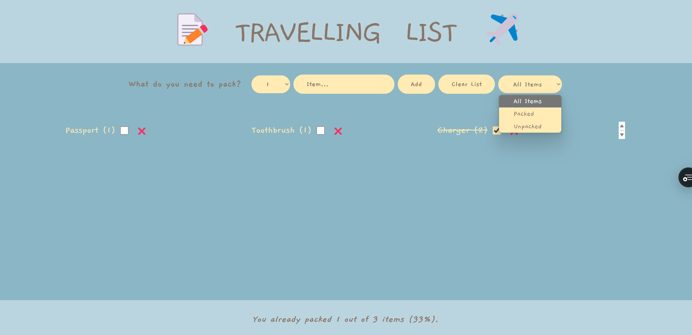

Project 7: Travelling List Web

This is a travelling list website where users can list all the items they need for their trip. Users can mark items as complete or incomplete and filter items based on whether they’ve been packed or not.
Tools & Apps Used
- Visual Studio Code – Used for writing all the programming code for the website.
- Behance – For inspiration and design references to help guide the project.
Concept
The concept behind this website was to provide a simple and efficient way for users to track all the items they need for their trips. The site allows users to easily manage their packing process.
Development Process
The code was given to us but we enhanced it by adding it more codes like filter, etc. The filter function and the ability to mark items complete were key features that were carefully implemented.
Click here to see the live website!